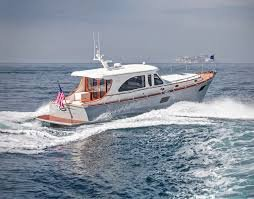
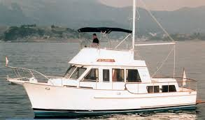

The best value on the dock is usually not the newest boat there. A well-kept 2004 with a documented refit can hand you more boat, better equipped, than a 2019 at the same money. Buyers run that math all the time and they are usually right. What catches them is the second math problem sitting behind the first one. An underwriter is running the same boat through a very different calculation, and age is the single biggest input in that file.
Most buyers find this out after the offer is accepted. The survey comes back, the insurance submission goes out, and suddenly there are conditions attached, a haul-out mandate, an insured value the carrier will not match, or a flat decline. It is all workable, but only if you see it coming. I am a broker, not an insurance agent, so your agent gets the final word on any of it. This is what I make sure a buyer knows before writing an offer on an older hull.
What "older" means to an underwriter
Broadly, and this varies by market and boat type, the bands work like this. Under roughly fifteen years, a clean boat is routine. In the fifteen to twenty-five year range, survey requirements tighten, and a carrier that would have taken a five-year-old survey now wants one every two or three years. Past about thirty the number of markets willing to quote thins noticeably, and the ones still playing may want a full out-of-water survey at every renewal. Past forty you are in specialty territory, particularly for wood or original systems.
Those are tendencies, not rules, and condition beats the calendar more often than buyers expect. A 1998 boat with a documented repower, new tanks, a rewired panel and current fire suppression certification is an easier risk to write than a neglected 2012. The file just has to prove it.
The systems that decide the file
When an underwriter reads a survey on an older boat, a short list of items does most of the work. Knowing the list lets you look at a boat the same way before you ever make an offer.
Electrical. Original AC and DC panels, brittle or undersized wiring, circuits a previous owner added with household-grade parts, corroded shore power inlets. Inlets in particular are a known dock-fire source on older boats, and a modern replacement is a cheap, visible fix underwriters like to see.
Fuel system. Aluminum tanks glassed into a hull thirty years ago are the classic older-boat problem. They corrode from the outside in, they are expensive to reach, and a survey note about tank condition can stop a submission cold. Fuel hose has a service life and a date stamp, and surveyors check.
Through-hulls, hoses and clamps. Sinking at the dock usually starts with a hose that was aboard longer than the current owner was. Double clamps, bonded seacocks that still turn, no plastic where bronze belongs.
Fire suppression. Engine room systems and portable extinguishers professionally inspected, tagged and current. This comes up again and again in denied and voided claims, and it is entirely within your control.
Everything else that ages. Old hydraulic steering lines, unsecured batteries, chargers past their design life, and moisture in a deck or hull core. The first three read as risk. The last one is a value question, and value drives how much of the boat the carrier is agreeing to stand behind.
The survey is the entire submission

Here is what buyers do not anticipate. Survey recommendations get sorted into two piles. Some items must be corrected before a carrier will bind at all. Others are accepted as conditions with a deadline, often thirty, sixty or ninety days after binding, with proof required. You can close on Friday and own a repair list with a due date by Monday. That is not a disaster. It is just something you want to know while you still have negotiating room.
"On an older boat the survey is not just your protection. It is the underwriter's file, and it decides what the policy costs, what it covers, and whether there is a policy at all."Clark Haley, Haley Yachts
How they will agree to value her
Age also shapes the shape of the coverage. On older hulls some markets will only offer actual cash value, and others will write agreed value but at a number anchored to the survey rather than to what you paid. If you and the seller landed above the surveyed value, the gap is yours to carry. I walk through that choice in insuring a yacht in Florida, and on an older boat it is the difference that matters most. Ask your agent to show you the depreciation schedules too, since canvas, outboards and electronics are often depreciated separately from the hull.
Storm terms ride on age as well
In Florida this is not theoretical. Older boats draw stricter storm conditions more often: a mandatory haul when a storm is named rather than an optional one, a lay-up period, a higher named-storm deductible expressed as a percentage of insured value, or a requirement that the boat sit north of a stated latitude or on the hard for part of the season. Before you commit, confirm your marina can actually haul your boat or that you have a yard that will. A haul-out requirement you cannot physically satisfy is a claim problem waiting to happen.
A decline is a real outcome, and it kills the loan too
Sometimes the honest answer is that nobody will write her at the value you need, or for a first-time owner of that size, or in her current condition. Better to know that in week one than week six, because a boat you cannot insure is a boat you cannot finance. Lenders require coverage in place at closing, usually from a carrier meeting a minimum financial strength rating, so an insurance problem quietly becomes a marine financing problem the same afternoon.
Sequence it so nothing surprises you
The fix is almost entirely order of operations.

Ask the seller for the current declarations page and the most recent survey. The dec page shows what the boat is insured for today, the deductibles, and the warranties her current carrier attached. That is a real preview.
Build the insurance window into your contract dates. Three to four weeks between survey and closing, not three days. Older boats need time in the market, and in August and September that market is at its slowest.
Get the submission out the day the survey lands, and get it to more than one agent in a coordinated way. There is a right and a wrong way to do that, and the wrong way costs you access to markets. The mechanics are in getting competitive boat insurance bids, and once the quotes are in, how to vet a marine insurance company covers picking between them.
The negotiating angle nobody uses
Here is the part I like. Survey items a carrier requires corrected before binding are the strongest repair-or-credit request a buyer ever gets to make. They are not opinions or preferences. They are the condition of the boat being insurable, documented by an independent surveyor and confirmed by a third party with money at stake. Sellers argue about cosmetic findings all day. They rarely argue with an underwriter. So do not absorb those conditions quietly after closing. Bring them back to the table while the deal is still open.
If you are looking at an older boat and want to know what her insurance file will look like before you commit, let's talk it through. Reach out to Clark Haley at Haley Yachts and we will line up the right surveyor, get an early read from marine insurance specialists, and answer the coverage question while you still have leverage instead of after you own her.